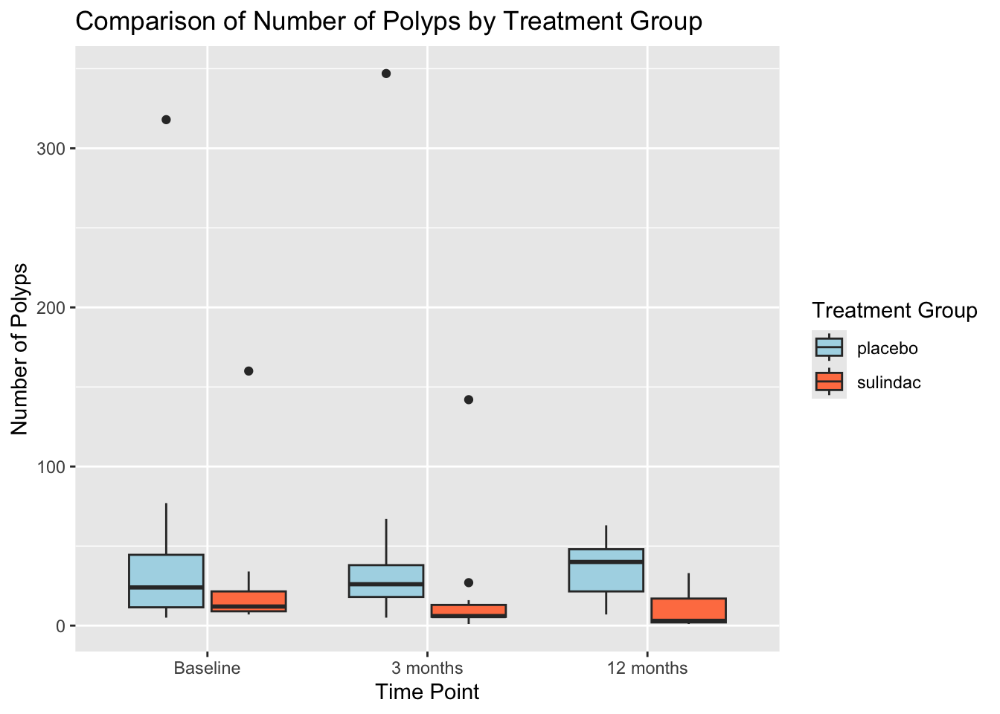

Variable |
Total N = 22 1 |
placebo |
sulindac |
p 2 |
|---|---|---|---|---|
| Sex | >0.9 | |||
| female | 9.0 (0.41) | 4.0 (0.36) | 5.0 (0.45) | |
| male | 13 (0.59) | 7.0 (0.64) | 6.0 (0.55) | |
| Age (yr) | 24 (9.1) | 26 (10) | 22 (7.6) | 0.3 |
| Base-line no. of polyps | 18 (5.0, 318) | 24 (5.0, 318) | 12 (7.0, 160) | 0.4 |
| No. of polyps at 3 months | 16 (1.0, 347) | 26 (5.0, 347) | 6.0 (1.0, 142) | 0.3 |
| No. of polyps at 12 months | 21 (1.0, 63) | 40 (7.0, 63) | 3.0 (1.0, 33) | 0.002 |
| Missing | 2 | 0 | 2 | |
| 1
n (%); Mean (SD); Median (Min, Max) |
||||
| 2
Pearson’s Chi-squared test; Welch Two Sample t-test |
||||
Treatment of colonic and rectal adenomas with sulindac in familial adenomatous polyposis
Data source
This data set is from a study published in 1993 in the New England Journal of Medicine: F. M. Giardiello, S. R. Hamilton, A. J. Krush, S. Piantadosi, L. M. Hylind, P. Celano, S. V. Booker, C. R. Robinson and G. J. A. Offerhaus (1993), Treatment of colonic and rectal adenomas with sulindac in familial adenomatous polyposis. New England Journal of Medicine, 328(18), 1313–1316.
It is part of the medicaldata package https://github.com/higgi13425/medicaldata/tree/master/data, “polyps” data set.
Background
Familial adenomatous polyposis (FAP) is an inherited condition caused by mutations in the APC (Adenomatous Polyposis Coli) gene that leads to early and frequent formation of precancerous polyps of the colon at a young age, and invariably leads to the development of colon cancer at a young age. Early, frequent surveillance colonoscopy and polyp removal is helpful, but this study examined whether there is a beneficial effect of preventive medical therapy with the nonsteroidal pain reliever, sulindac, versus placebo in a RCT vs placebo in 22 participants, with polyp number measured (via colonoscopy) at baseline, 3 months, and 12 months after starting the study drug.
Study Design
Prospective randomized controlled trial of sulindac vs. placebo in the prevention of colonic polyps in FAP.
Subjects & Variables
22 participants were assigned to 1 of 2 treatments, sulindac or placebo. The initial sample consisted of 22 people with known FAP. n = 22 subjects (2 dropped out between month 3 and 12)
7 variables: participant_id, sex, age, baseline (number of polyps at baseline visit), treatment (sulindac or placebo), number3m (number of polyps at 3 months), and number6m (number of polyps at 6 months).
Results
As shown in Table 1, twenty-two patients were randomly assigned to treatment groups. Eleven patients received sulindac, and 11 placebo. There were no significant differences in demographic characteristics between the treatment groups. The participant’s mean age was 24.09 years. Two patients were withdrawn from the study, but their data were analyzed by the intention-to-treat strategy.
The number of polyps at baseline was not significantly different between the treatment groups (Table 1). The number of polyps was decreased in the group given sulindac at 3 and 12 months (Figure 1), but only reached statistical significance at 12 months (Table 1) (Welch two-sample t-test, p=0.002).

A multiple linear regression analysis was conducted to adjust for differences between treatment groups in age and sex and determine whether these differences in demographic characteristics impacted on prognostic features such as the baseline number of polyps. Table 2 shows, at the 5% significance level, no statistically significant association of these variables with the number of polyps at baseline.
Characteristic |
Beta |
95% CI 1 |
p-value |
|---|---|---|---|
| Age (yr) | -2.7 | -6.4, 1.0 | 0.14 |
| Sex | |||
| female | — | — | |
| male | 45 | -22, 112 | 0.2 |
| 1
CI = Confidence Interval |
|||
Discussion
In this study, sulindac effectively reduced the size and number of colonic and rectal polyps in patients with familial adenomatous polyposis (Figure 1). Long-term clinical studies of sulindac therapy are needed in patients with familial adenomatous polyposis who have had subtotal colectomy and ileorectal anastomosis to evaluate its efficacy in reducing the occurrence of rectal cancer.